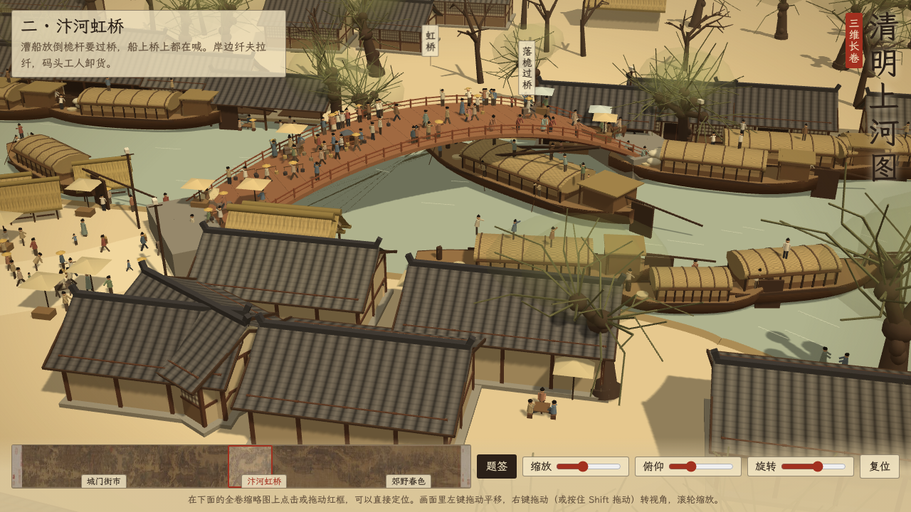
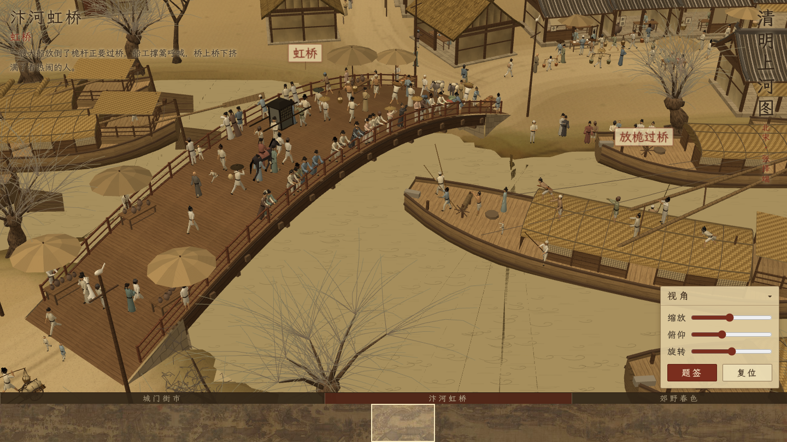
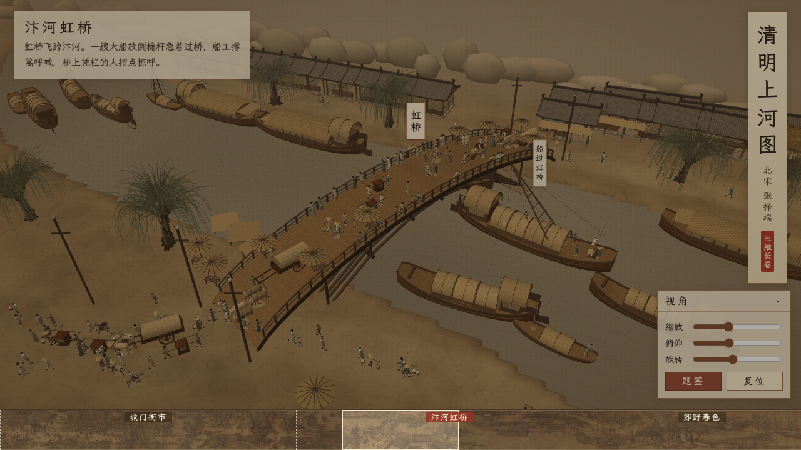
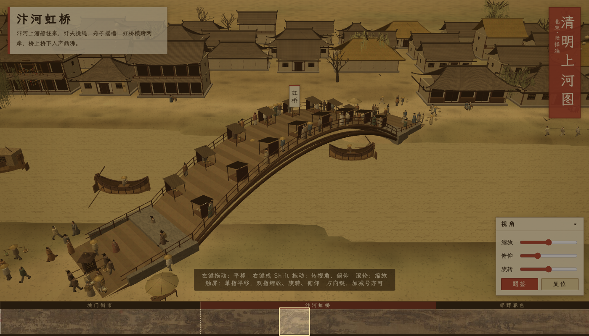
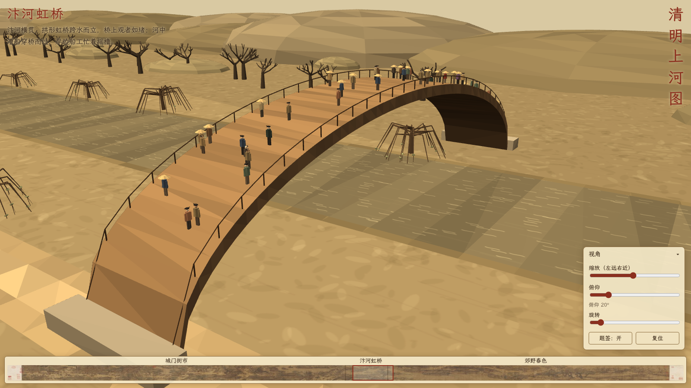
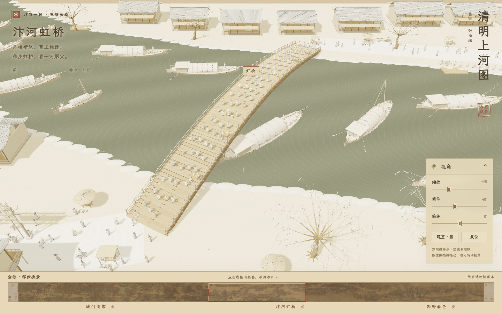
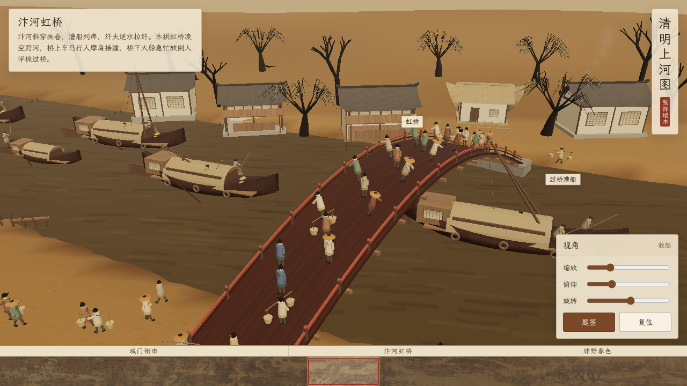
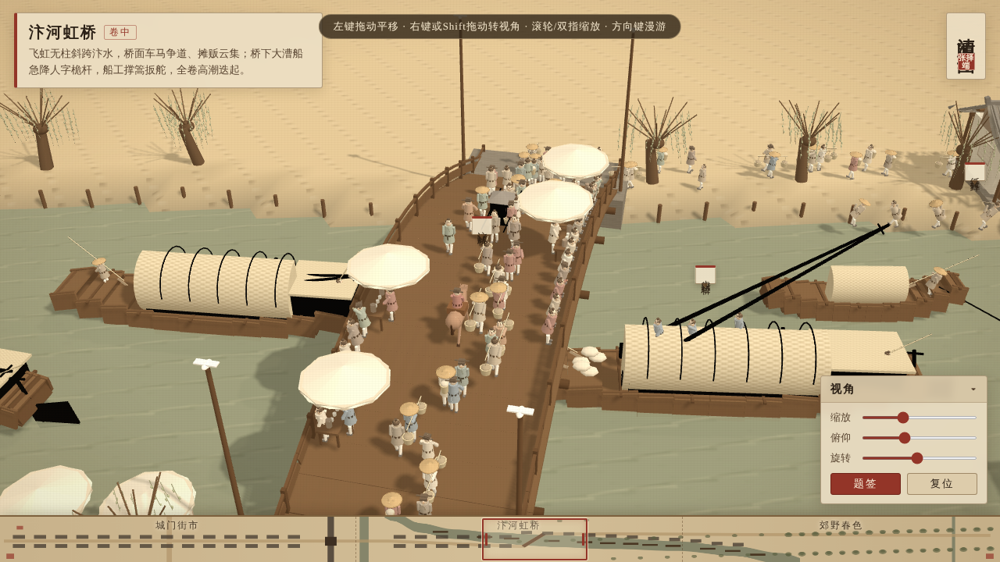
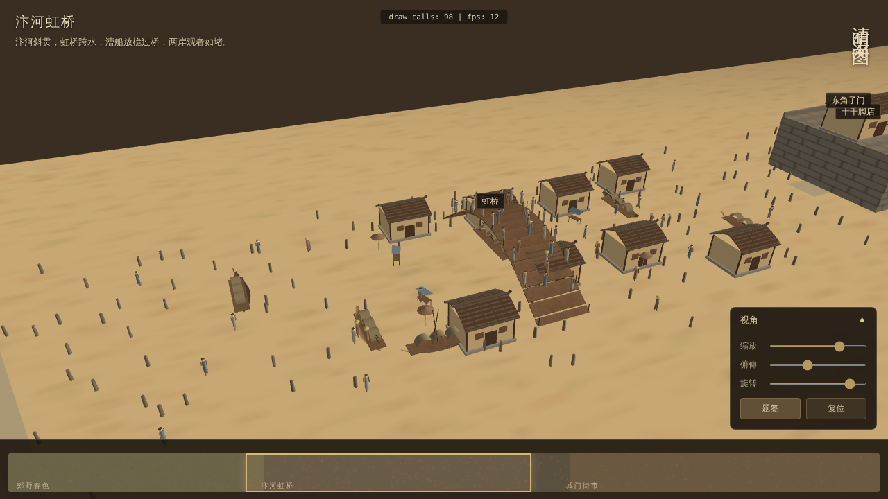

三维《清明上河图》
同一份提示词，不同模型用 three.js 做出来的三维长卷。点开就能拖动浏览，每个人物、牲口、车船都会动。

Claude Fable 5.2（多轮）八轮对话逐步改成
Claude Fable 5.2（一次性）合并提示词，一轮完成
Claude Opus 5.5合并提示词，一轮完成
Claude Sonnet 5.5合并提示词，一轮完成
Claude Haiku 5.5合并提示词，一轮完成
GPT-6 Astra合并提示词，额度中断后续跑
Gemini 4 HydrogenAI Studio 对话三轮，无运行环境；改了一个名字才能打开
Gemini 4 CarbonAI Studio 对话 7 轮，无运行环境；补了实例颜色才能完整显示
DeepSeek网页版对话 13 轮，无运行环境；补了一个缺失的几何体才能打开